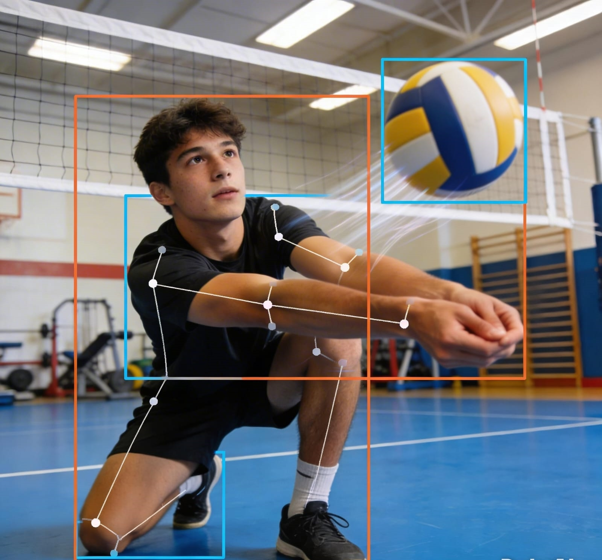

La visión por computadora es una rama de la inteligencia artificial que permite analizar imágenes y videos para interpretar movimientos humanos.
En el ámbito deportivo, esta tecnología permite evaluar postura, velocidad, ángulos y coordinación del jugador de manera precisa y objetiva.
El sistema propuesto utiliza detección de puntos corporales (pose tracking) para mapear el esqueleto del jugador, analizar su técnica y generar retroalimentación en tiempo real sin necesidad de sensores físicos en el cuerpo.
